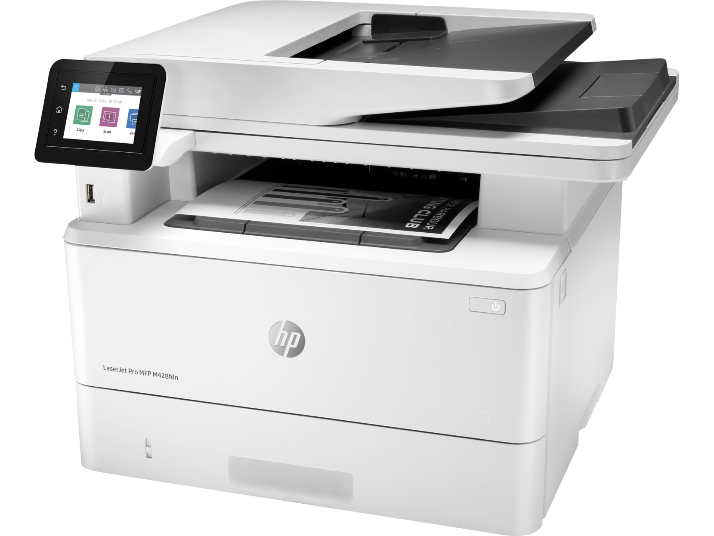

A nyomtatók csoportosítása
- Karakternyomtatót: egyszerre egy karakter nyomtat.
- Sornyomtatót: egyszerre egy egész sort nyomtat.
- Lapnyomtatót: egyszerre egy egész lapot nyomtat
- kábellel: párhuzamos, soros (USB vagy RS-232), Ethernet
- vezeték nélküli módon: IrDA, Bluetooth, Wifi
Ipari, nyomdaipari felhasználású nyomtatók
| Vízbázisú technológia | Oldószertartalmú technológia |
|---|---|
| Dye based azaz vízbázisú színezékkel nagy színerejű, fotószerű képek készülhetnek, az erős fényt nem, vagy korlátozottan viselik el, pár hónap(!) után a nyomatok fakulhatnak. A "dye" szerves kémiai színezék, mint szerves vegyület, bomlékony, innen a fakulásveszély. | Eco solventnek nevezik a nagy felbontású (720dpi vagy több) Epson fejekkel kompatibilis festékeket. Ezek bevonat nélküli anyagokon is működnek, a különböző generációk (Eco Sol, Eco Sol II, Eco Sol Max, stb) eltérő karcállósággal és UV ellenállósággal rendelkeznek. |
| Pigment based festékkel készült nyomatok alkalmasak UV fény terhelés elviselésére is. Múzeumi körülmények közti élettartam akár száz év is lehet, a direkt napsugárzást is elviselhetik 2-4 évig. A pigment fémes jellegű vegyület, nem bomlik könnyen le, mint a dye. | Hard solvent nyomtatókat szokás röviden "oldószeres" nyomtatónak nevezni. UV, vízálló, karcálló nyomatok készítésére alkalmasak, jellemzően 360 dpi-s fejekkel. A nyomás képet gyakran a CMYK (nyomdai alapszínek, ciánkék, magenta, sárga, fekete) világos színekkel javítják. |
Nyomtatók fajtái
Margarétafejes nyomtató
Csak a gyári fejen lévő fix karakterkészletet tudja alkalmazni, ugyanúgy, mint az írógépek. Kis sebességgel, de viszonylag szép kép nyomtatható vele. Ahogy a dobos vagy szalagos nyomtató, úgy a margarétafejes nyomtató is folyamatos vonalú karaktert állít elő, mivel a karakterek jó minőségű a képe.
Lézernyomtató
A lézernyomtatóban speciális, fényérzékeny anyaggal bevont és elektromosan feltöltött henger található. Ezen egy lézersugárral jelölik meg a nem fehér pontokat: ahol a lézer a hengerhez ér, ott a henger semleges lesz vagy ellentétesen lesz töltött a henger többi részéhez képest.
Íróhengeres nyomtató
Egyszerre egy egész sort tudnak nyomtatni, ezeket nevezzük sornyomtatóknak. Minden nyomtatási pozíción (helyen) található egy ütőfej (kalapács), az íróhenger folyamatosan forog, amikor az adott pozíción a kalapács elé kerül a megfelelő jel, akkor az összes olyan kalapács leüt a sorban, amelyik az adott karaktert akarja nyomtatni.

Mátrixnyomtató
A mátrixnyomtató az írógép továbbfejlesztett változata. A nyomtatófejben apró tűk vannak (általában 9 vagy 24 db). A papír előtt egy kifeszített festékszalag mozog, amelyre a tűk ráütnek, és létrehoznak a papíron egy pontot.
Hőnyomtató
A hőnyomtató speciális papírtekercset, ún. hőpapírt használ. Ennek az a tulajdonsága, hogy a fehér bevonata hő hatására megfeketedik. Ennek a papírnak nyomódik neki az írófej. A fejen a képpontoknak megfelelő kis ellenállások helyezkednek el.

Tintasugaras nyomtató
A tintasugaras nyomtatók tintapatronok segítségével tintacseppeket juttatnak a papírlapra. A patronban van egy porlasztó, ez megfelelő méretű tintacseppekre alakítja a tintát, és a papírlapra juttatja azt. A színes tintasugaras nyomtató színes tintapatronokat használ, általában négy alapszín használatával keveri ki a megfelelő árnyalatokat: ciánkék, bíborvörös, sárga és